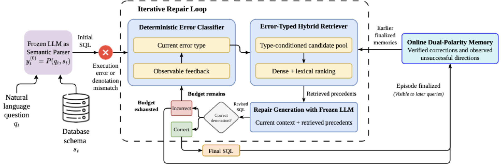
PhD Student in Natural Language Processing
I am a PhD student in the Computing & Mathematical Sciences Division, advised by Professor Timothy Baldwin and Dr. Yova Kementchedjhieva.
Background. I completed my Computer Science degree at HCMUT-VNU in an accelerated 3.5 years. Under the guidance of Assoc. Prof. Dr. Tho T. Quan, I built foundations in machine learning, deep learning, and multimodal analysis, with programming experience in Python, C++, and Java.
Research interests. Vision-language models, uncertainty quantification, hallucination detection, and multimodal learning.
Open to internships. I am looking for 3–6 month industry research internships, preferably in Europe, or in the US. If you think I would be a good fit, please reach out on LinkedIn.
Recent research updates and milestones.
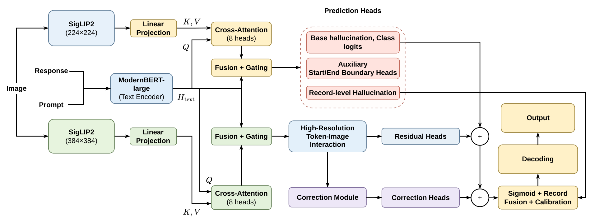
Team HalluciNauts at SHROOM-Visions: Anchor-Preserving Dual-Resolution Grounding for Fine-Grained Vision Hallucination Detection is now published in the Proceedings of the Third Workshop on Uncertainty-Aware NLP (UncertaiNLP), co-located with EMNLP 2026 in Budapest, Hungary.
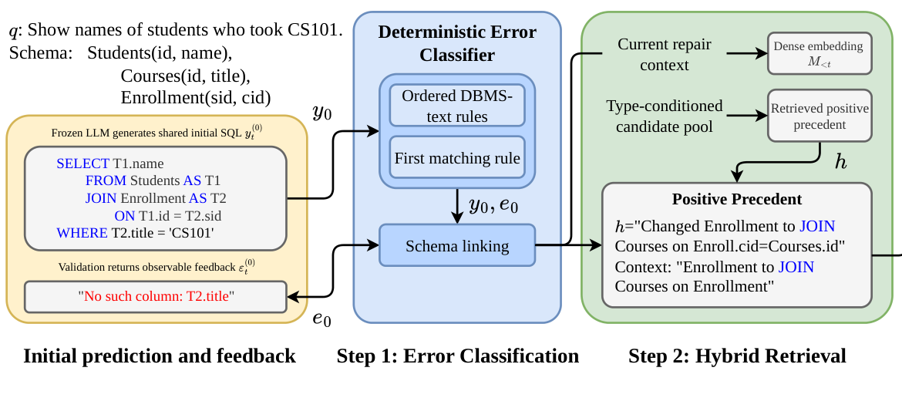
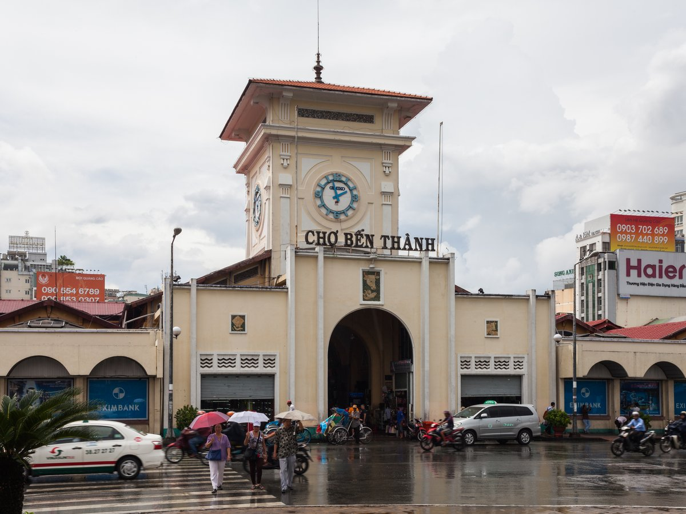
Entropy-Weighted Neighborhood Gradients for Decentralized Federated Learning with Noisy Medical Labels was accepted to CSoNet 2026 and will appear in Springer's Lecture Notes in Computer Science (LNCS, Q2). Congrats everyone!
I served as a teaching assistant for Mathematical Foundations for AI at MBZUAI, where I co-organized the lab sessions and created problems for the final examination.
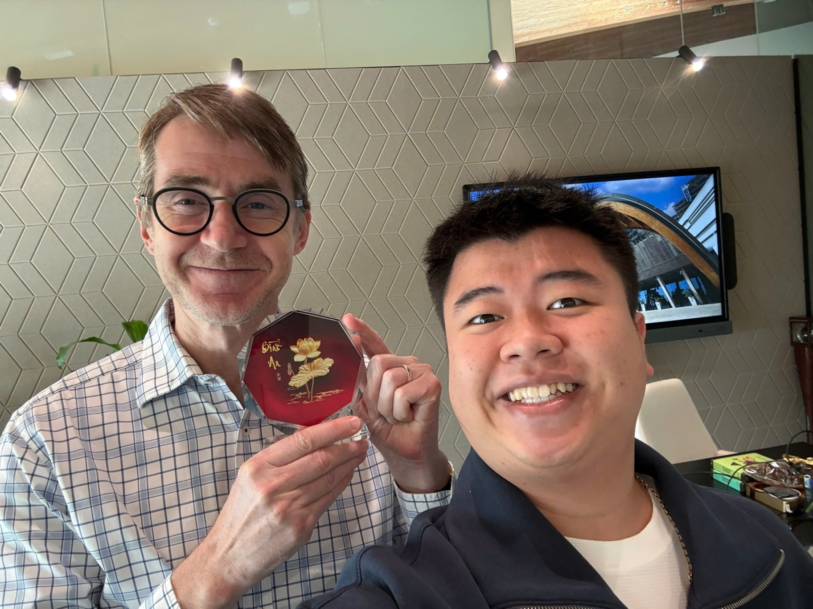
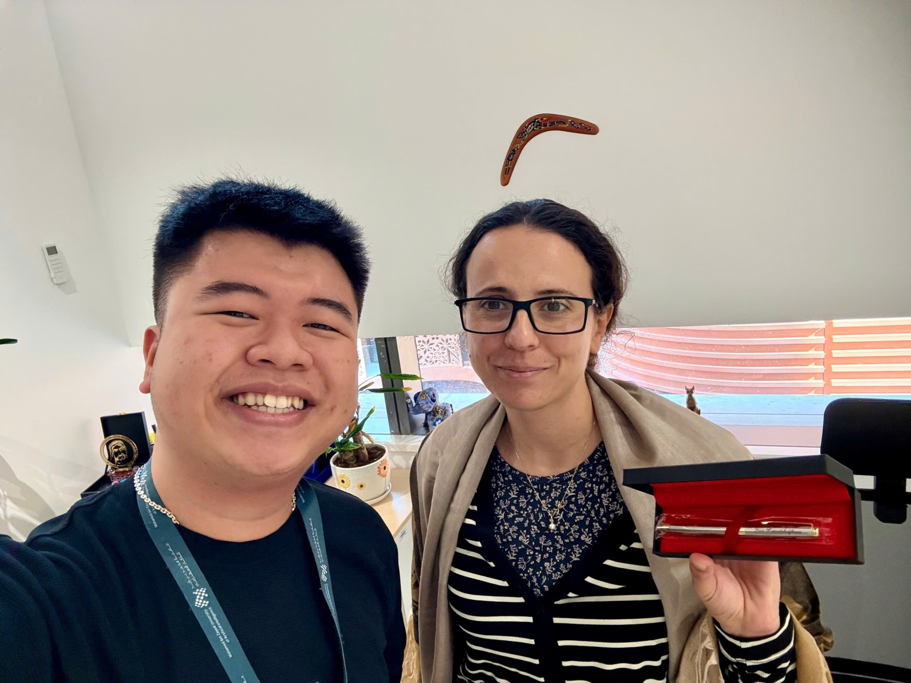
Working under the guidance of Professor Timothy Baldwin and Dr. Yova Kementchedjhieva, focusing on uncertainty in multimodal learning and vision-language models.
Teaching assistant for Mathematical Foundations for AI, a half-semester course. Co-organized the lab sessions and created problems for the final examination.
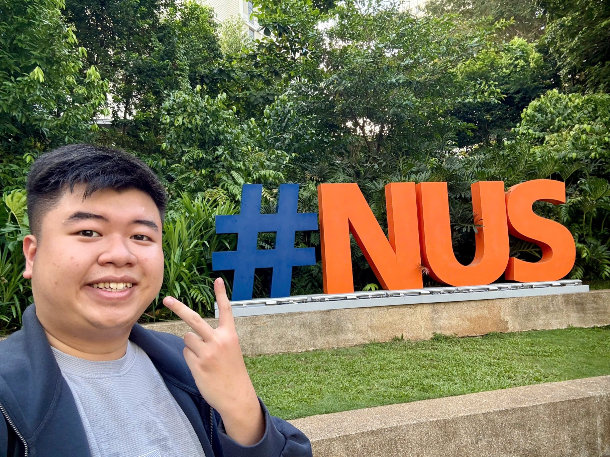
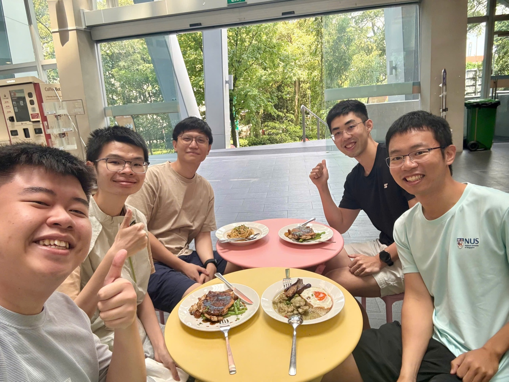
Worked at the National University of Singapore (NUS) with Professor Anji Liu on uncertainty quantification and hallucination detection in vision-language models.
Served as a reviewer and Program Committee member for the 15th International Conference on Computational Science and Network Intelligence (CSoNet 2026).
* denotes equal contribution. A complete list is available on Google Scholar.

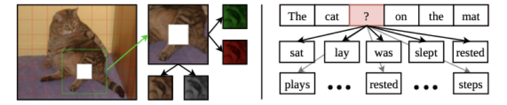
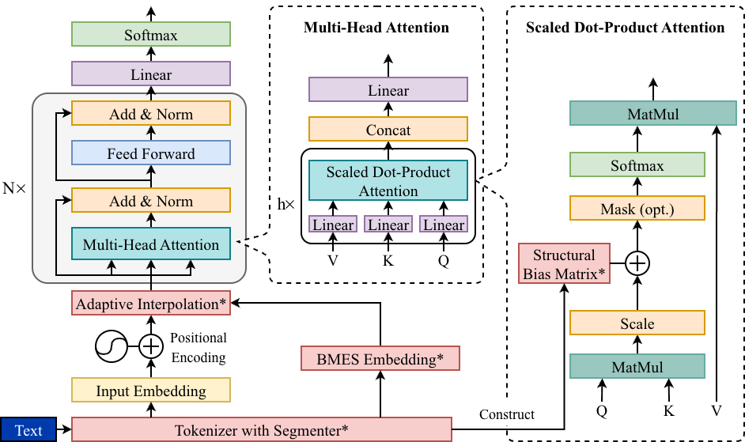
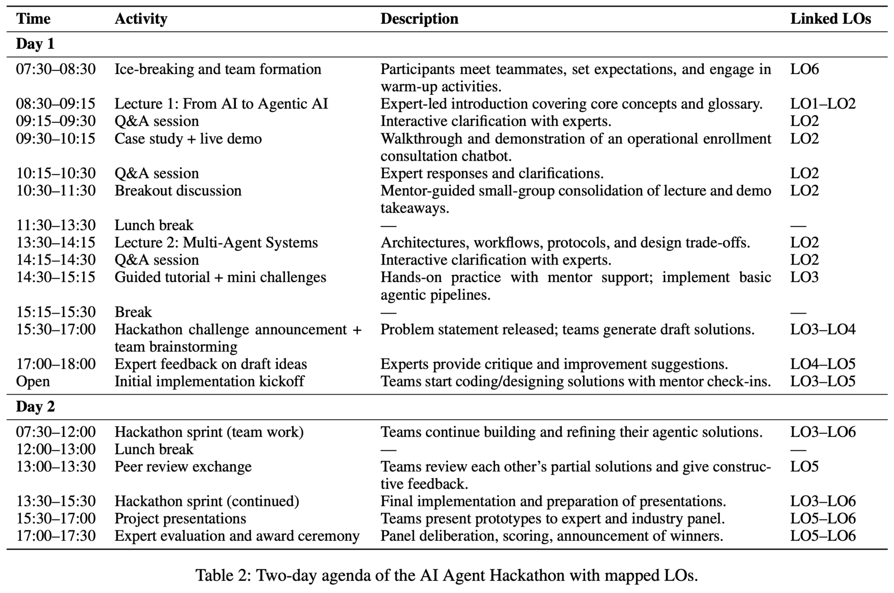
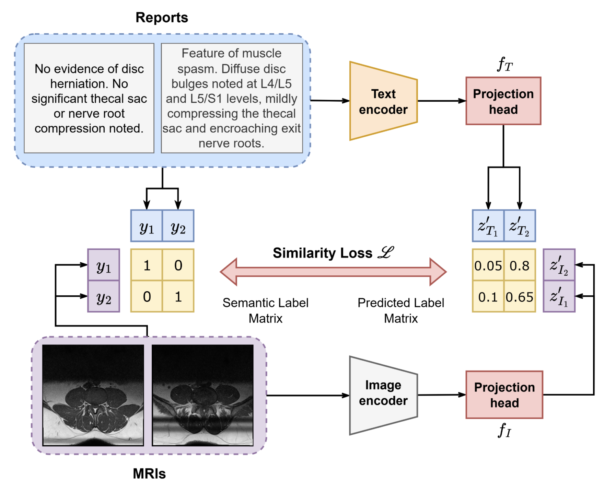
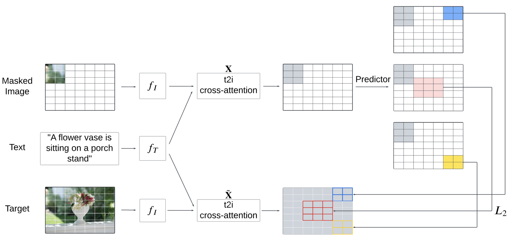
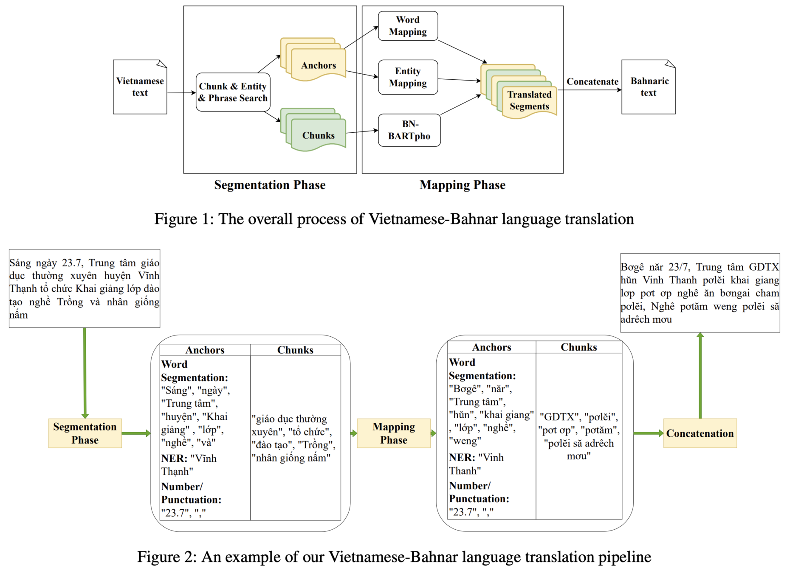
Selected software and research prototypes.
I welcome inquiries about research collaboration and related opportunities.